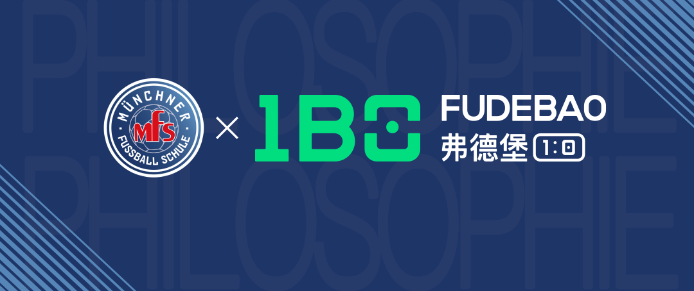
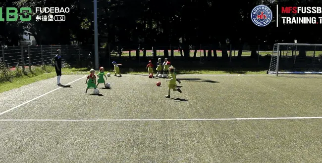
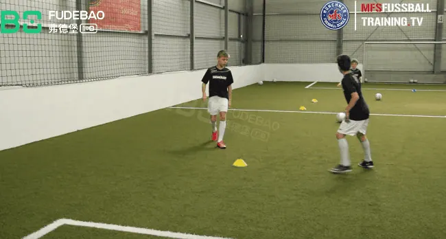
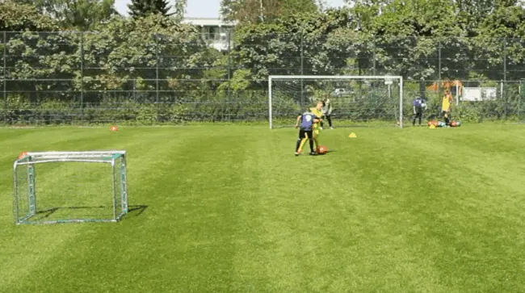
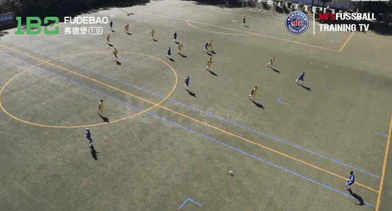
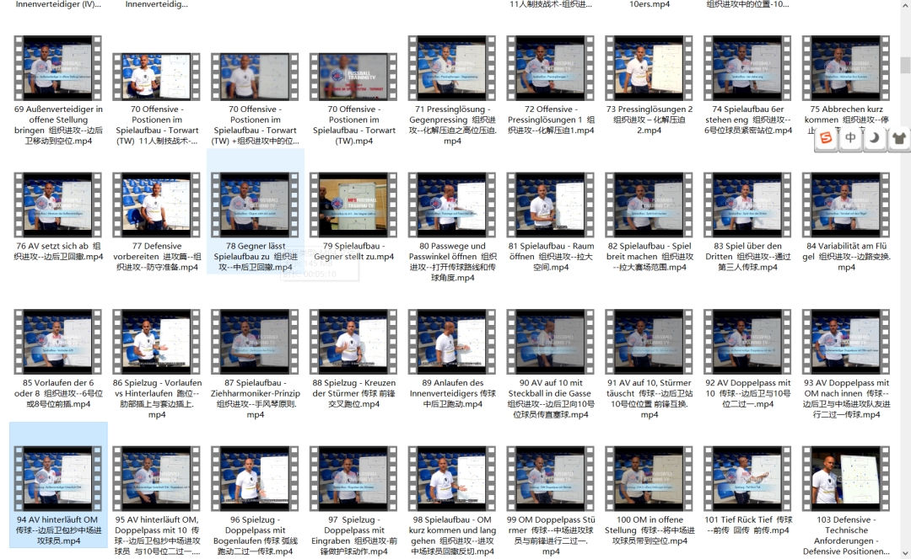

接着上周的，我们继续讨论
孩子在14岁左右，青春发育阶段，对于身体与战术（比赛）的训练将成为重点。
当然，技术训练也是不能停的，但这个阶段应该已经没有新的技术动作要进行学习了，只是不断地巩固。
体能方面，基本的协调与速度练习肯定还是不能少的，但难度需要不断提升。

除了这些及上周说到的，在孩子青春发育完成后，可以将力量训练安排在训练日常中，重点提升上肢与核心力量，但强度仍然不宜过大，每周额外进行1个小时的训练量就差不多。力量训练的内容需要教练根据孩子情况安排，逐步提升强度，循序渐进提升。
需要注意的是，比赛前一天不要给孩子安排下蹲动作的练习，这样会削弱孩子的运动表现。
今天我们的重点在战术与比赛
足球运动其实是身体与脑力的最佳结合，足球战术在比赛中的决定性作用越来越大，现代足球战术也变得越来越复杂，因此球员的战术理解力与战术执行力至关重要，这些也是需要从小培养的。
让我们再回到孩子6岁左右的初学阶段，这个阶段不用刻意进行任何战术的讲解与练习，他们此时还无法理解战术，但要引导孩子养成抬头踢球的习惯，观察是一切战术执行的基础。

通过足球游戏的设计，让孩子带球的时候注意观察目标，在启蒙阶段自然而然就可以养成抬头踢球的习惯
8到10岁这个阶段，可以开始一些基础战术理念的灌输，慕尼黑足球学校（以下简称MFS）的理念是，将基本战术执行原则融入日常练习中去。
比如：
- 在传球练习中，要求无球球员不能原地等着接球，接球前要观察四周后反向启动虚晃；
- 在对抗或者抢圈练习中，防守方的“胜利”并不只是抢下球，要给防守方设置一个反攻目标，培养球员快速攻防转换的意识；
- 所有练习中有球员交换任务和位置的场景，都可以安排两名球员围绕标志碟做二过一，培养孩子与队友做配合的意识。

原文配图 · 弗德堡体育
接应传球前要反向启动虚晃欺骗对手

组织起反攻，才能算是一次成功的防守
可以给这个阶段孩子安排一些 个人-小组 的战术练习，比如边路1对1攻防、中路2对1攻防练习等，但比重不要太多，该阶段训练重点还是应该在技术与身体协调性上。
比赛方面，8-10岁应该给孩子安排5人制或7人制比赛，最好使用2-2或者3-3阵型，让球员不断轮转换位，理解最基本2条线的阵型战术的构建，了解基本的2打1、2打2的攻防要点即可。
接下来12岁左右到青春发育前这个阶段，我们可以开始给孩子进行影子训练，让孩子对阵型构建与整体移动有一个初步的了解：
【视频】
从5人制开始，帮助孩子理解阵型整体站位，压迫与深度逼抢的基本原则，如何创造强侧等。
比赛方面，要从5人制7人制向8人制9人制过渡，即从理解两条线的战术转变为理解三条线的战术。
国内这个年龄段孩子正式比赛采用8人制，我们可以将3-3-1阵型作为练习的重点，3-3-1在整体组织与整体移动上与11人制经典的4-4-2相似程度已经很高了。
该阶段主要目标是让孩子对三条线的战术有更好的宏观理解，理解球场空间的概念，要让孩子理解明白场上的所有战术决策是通过“球、对手、队友、空间”这4个参照物进行判断的。

孩子在比赛和战术训练中，不要固定位置，要不断的换位，虽然这样的轮转换位可能导致球队的比赛实力下滑，甚至会因此输掉一些比赛。但让孩子理解每个位置的踢法是非常有必要的，一个优秀的前锋一定需要知道后卫的想法，门将最好也要参与到位置轮换中，因为现代足球队门将的脚下技术要求越来越高。
教练一定要明白，这个阶段重点不在比赛的输赢，而在球员的成长。
孩子青春发育过后，就可以开始踢真正的11人制比赛了，此时的训练重点也要从技术与身体协调性切换到比赛战术了，可以先从最基本的4-4-2阵型开始，首先让球员掌握最基本的组织模式与整体移动，这个过程球员还是要不断轮转换位，了解每个位置的基本职责。在此基础上，可以开始一些针对性的战术练习，比如基于某种小组配合套路的攻防演练，或是某种场景下的压迫模式。

我们为也为大家准备了海量的战术讲解与演练的视频，未来也会陆续为大家更新。

文字与图片版权归各自权利人所有；排版根据抓取内容整理。